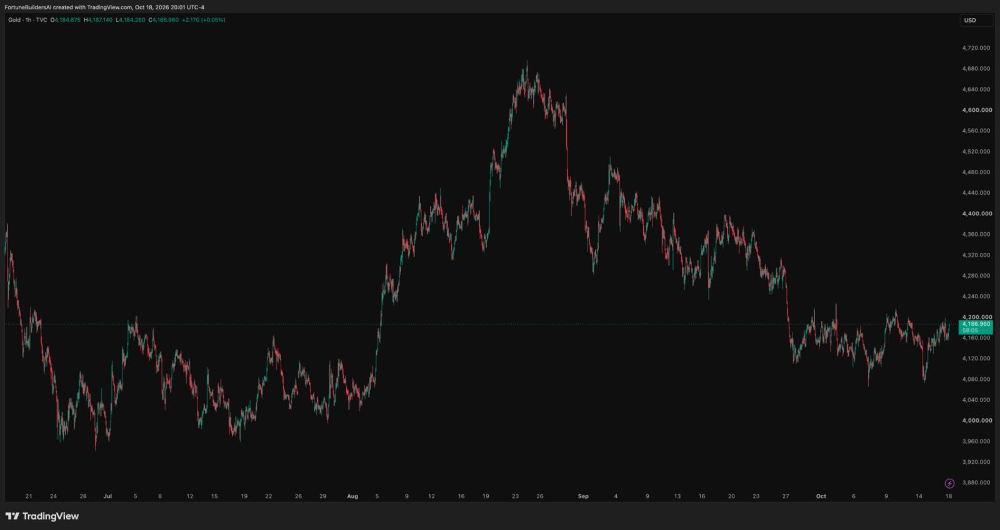

Lectura semanal
Neutral con ligero sesgo correctivo
Convicción media-baja. El precio está cerca del techo del rango, mientras inflación y consumo siguen firmes.
La captura del 18 de octubre muestra al oro en USD 4,186.960, aproximadamente 0.3% por debajo de la referencia de la semana pasada. El precio continúa dentro de USD 4,100 a USD 4,220 después del retroceso desde los máximos de agosto. Mientras no haya un cierre H4 fuera de ese rango, la lectura sigue siendo de consolidación y no de cambio estructural.
Lectura educativa, no señal de inversión
Convicción media-baja. El precio está cerca del techo del rango, mientras inflación y consumo siguen firmes.
El mercado sigue lateral después del retroceso. La prioridad es distinguir rebote, rechazo y ruptura confirmada.
Sobre USD 4,220 mejora la lectura de recuperación. Debajo de USD 4,100 vuelve a crecer la presión correctiva.
El viernes 23 actualiza sentimiento y expectativas de inflación antes de la reunión del FOMC del 27 y 28 de octubre.
Consulta este bloque antes de abrir el gráfico y vuelve después de cada publicación importante.
Convicción media-baja mientras el precio siga dentro del rango.
El contexto sigue siendo de consolidación hasta que exista confirmación H4.
Viernes 23, 10:00 AM Miami. Actualiza sentimiento y expectativas de inflación.
Sobre USD 4,220 cambia la lectura de recuperación; debajo de USD 4,100 aumenta la presión correctiva.
Para volver a una dirección clara, sin forzar una operación.
El rango sigue vigente, pero el contexto macro ahora combina inflación y consumo firmes con una ligera caída de los rendimientos reales.
La referencia pasó de USD 4,197.840 a USD 4,186.960, una variación aproximada de -0.26%. El oro continúa por debajo de USD 4,220 y por encima de USD 4,100, sin confirmación H4 en ninguno de los dos extremos.
El CPI de septiembre subió 0.6% mensual y 3.7% interanual; el PPI final aumentó 1.3% mensual y 6.3% interanual; las ventas minoristas crecieron 0.8% mensual. El conjunto puede sostener expectativas de tasas altas. [1] [2] [3]
La reunión del FOMC está programada para el 27 y 28 de octubre. El H.15 del 16 de octubre mostraba 5.10% a 10 años y 2.78% en el rendimiento real a 10 años, todavía elevados aunque por debajo de la semana anterior. [4] [5]
Estas referencias simplifican el mapa técnico. No son órdenes de compra o venta ni objetivos garantizados.
Un cierre H4 sobre esta franja dejaría atrás el techo reciente. Si además retroceden el dólar y los rendimientos reales, la siguiente referencia de observación sería USD 4,280 a USD 4,320.
USD 4,186.960 deja al oro cerca de la parte alta, pero aún sin ruptura. Entre estos niveles pueden aparecer volatilidad bilateral, barridos y rechazos alrededor de los datos.
Un cierre H4 debajo de esta franja debilita la recuperación y deja en observación USD 4,050 a USD 4,000. Son referencias de mercado, no objetivos de operación.

Esta semana no trae CPI ni PPI. El foco se desplaza a vivienda, empleo, sentimiento y posicionamiento antes de la reunión del FOMC del 27 y 28 de octubre.
Census publica permisos, inicios y terminaciones de vivienda de septiembre a las 8:30 AM; BLS publica empleo y desempleo estatal a las 10:00 AM. La lectura conjunta aporta contexto de crecimiento y trabajo.
VENTANA PRINCIPALBLS publica el dato de ingresos usuales de trabajadores asalariados del tercer trimestre. Es una referencia secundaria; no hay CPI ni PPI programados para este día.
El reporte semanal de UI ofrece una lectura rápida del mercado laboral. La sorpresa puede mover las expectativas de política monetaria y el dólar.
La lectura final de confianza y expectativas de inflación completa el dato preliminar de 46.3, 4.7% a un año y 3.5% a largo plazo.
CIERRE DE SEMANALa próxima revisión se publica tras vivienda y empleo estatal del martes. Hasta entonces, el plan semanal conserva la lectura de rango.
Las actualizaciones son observaciones educativas de contexto, no señales ni instrucciones de operación.
El escenario base no intenta adivinar el siguiente movimiento. Define qué tendría que observarse para cambiar la lectura.
El oro permanece entre USD 4,100 y USD 4,220. La actividad y la inflación firmes limitan la recuperación, mientras el descenso de los rendimientos evita una extensión bajista automática.
Vivienda o Michigan más débiles, rendimientos reales a la baja y menor presión del dólar pueden favorecer la continuidad. Un cierre H4 sobre USD 4,220 deja en observación USD 4,280 a USD 4,320.
Datos resistentes, rendimientos al alza o una expectativa más restrictiva para el FOMC pueden provocar rechazo. Un cierre H4 debajo de USD 4,100 deja en observación USD 4,050 a USD 4,000, sin convertir esa zona en una predicción.
La actualización separa el contexto del oro, la lectura de gráficos y los accesos directos de análisis y educación.
La referencia del oro pasó de USD 4,197.840 a USD 4,186.960, una variación aproximada de -0.26%. El precio sigue cerca de la parte alta del rango, pero todavía no confirma un cierre H4 sobre USD 4,220.
La lectura se actualiza a neutral con ligero sesgo correctivo y convicción media-baja. La inflación, el consumo y la industria firmes exigen cautela, mientras los rendimientos reales algo más bajos mantienen abierta la posibilidad de rebote. Esto no constituye una señal automática.
Elige la herramienta que responde a tu momento: Opus para organizar el análisis técnico en TradingView, o Live Sessions para acompañamiento y educación en vivo. Cada producto se adquiere desde su web oficial.
El escáner de inteligencia artificial organiza una lectura técnica estructurada para que evalúes tus propias decisiones. No coloca órdenes ni administra capital.
Opus es una herramienta tecnológica de análisis; no es asesoría financiera personalizada.
Acceder a OpusUn programa educativo de sesiones en vivo y acompañamiento práctico. Todos los planes incluyen Gold Black Trade por la misma vigencia.
Las sesiones son educativas; cada participante toma sus propias decisiones y asume el riesgo correspondiente.
Comprar Live Sessions